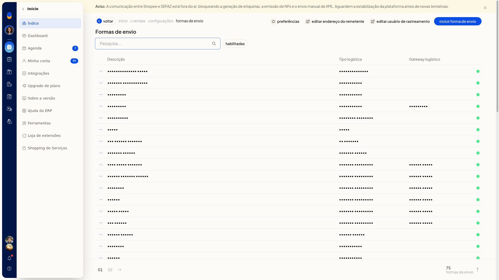

Desabilitar uma forma de envio
Pré-requisitos
- Se a opção não aparecer para você, peça acesso ao administrador da conta.
Instruções
-
Acesse Configurações > Configurações ERP > Vendas > Formas de envio.
-
No filtro de situação, mantenha habilitadas para localizar a forma.

-
Na linha da forma, abra o menu de ações e clique em Desabilitar.